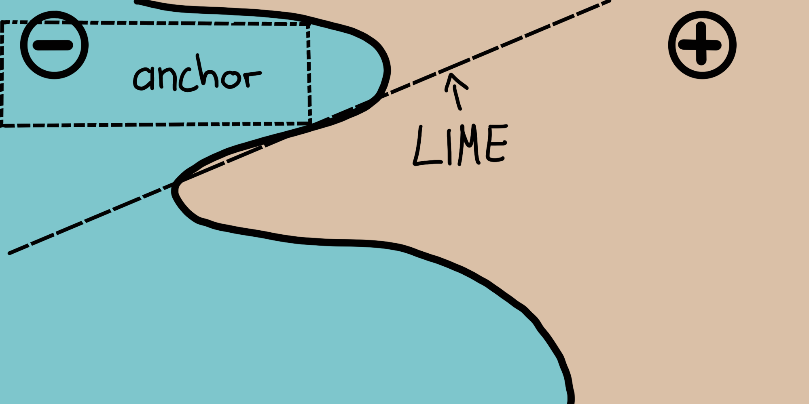
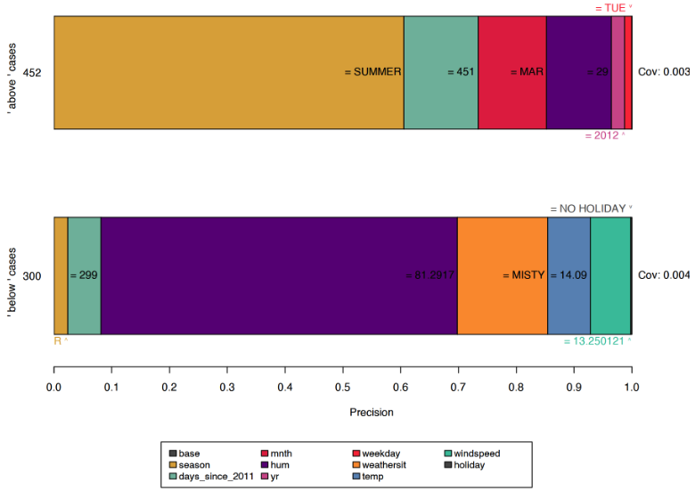
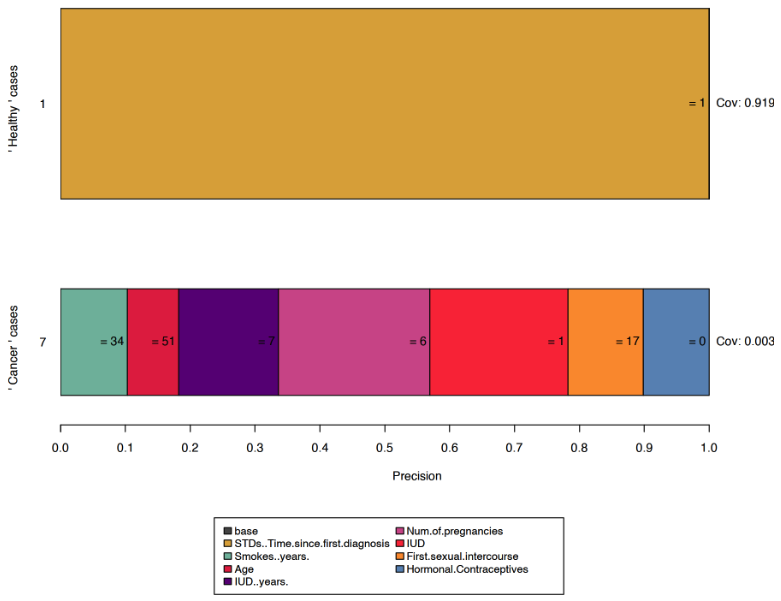
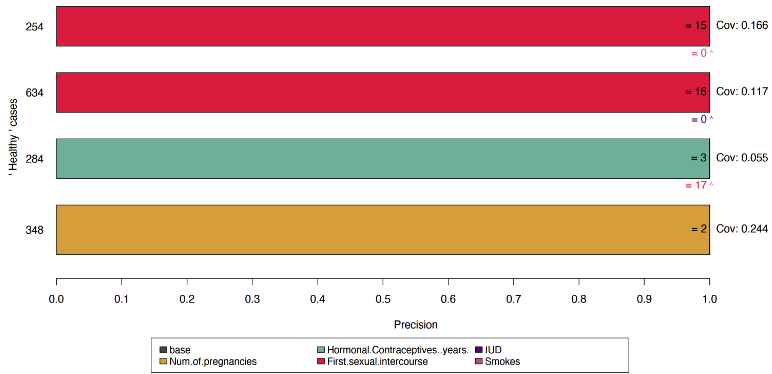

En cours de traduction.
9.4 - Règles de portée (ancres)
Auteurs : Tobias Goerke et Magdalena Lang
La méthode des ancres explique les prédictions individuelles de tout modèle de classification par boîte noire en trouvant une règle de décision qui « ancre » suffisamment la prédiction. Une règle ancre une prédiction si les modifications apportées aux autres valeurs de caractéristiques n’affectent pas la prédiction. Anchors utilise des techniques d’apprentissage par renforcement en combinaison avec un algorithme de recherche de graphiques pour réduire le nombre d’appels de modèle (et donc le temps d’exécution requis) au minimum tout en étant capable de récupérer des optima locaux. Ribeiro, Singh et Guestrin ont proposé l’algorithme en 20181 – les mêmes chercheurs qui ont introduit l’ algorithme LIME.
Comme son prédécesseur, l’approche des ancres déploie une stratégie basée sur les perturbations pour générer des explications locales pour les prédictions des modèles d’apprentissage automatique en boîte noire. Cependant, au lieu des modèles de substitution utilisés par LIME, les explications résultantes sont exprimées sous forme de règles SI-ALORS faciles à comprendre , appelées ancres. Ces règles sont réutilisables, car elles sont étendues : les ancres incluent la notion de couverture, indiquant précisément à quelles autres instances, éventuellement invisibles, elles s’appliquent. Trouver des points d’ancrage implique un problème d’exploration ou de bandit à plusieurs bras, qui trouve son origine dans la discipline de l’apprentissage par renforcement. À cette fin, des voisins, ou perturbations, sont créés et évalués pour chaque instance expliquée. Cela permet à l’approche de ne pas tenir compte de la structure de la boîte noire et de ses paramètres internes afin que ceux-ci puissent rester à la fois inobservés et inchangés. Ainsi, l’algorithme est indépendant du modèle, ce qui signifie qu’il peut être appliqué à n’importe quelle classe de modèle.
Dans leur article, les auteurs comparent leurs deux algorithmes et visualisent à quel point ils consultent différemment le voisinage d’une instance pour obtenir des résultats. Pour cela, la figure suivante représente à la fois LIME et les ancres expliquant localement un classificateur binaire complexe (prédit soit - soit + ) à l’aide de deux instances exemplaires. Les résultats de LIME n’indiquent pas leur fidélité, car LIME apprend uniquement une limite de décision linéaire qui se rapproche le mieux du modèle étant donné un espace de perturbation \(D\). Étant donné le même espace de perturbations, l’approche des ancres construit des explications dont la couverture est adaptée au comportement du modèle et l’approche exprime clairement leurs limites. Ainsi, ils sont fidèles par conception et indiquent exactement pour quelles instances ils sont valables. Cette propriété rend les ancres particulièrement intuitives et faciles à comprendre.

Comme mentionné précédemment, les résultats ou explications de l’algorithme se présentent sous la forme de règles, appelées ancres. L’exemple simple suivant illustre une telle ancre. Par exemple, supposons que nous disposions d’un modèle de boîte noire bivariée qui prédit si un passager a survécu ou non au désastre du Titanic. Nous aimerions maintenant savoir pourquoi le modèle prédit la survie d’un individu spécifique. L’algorithme d’ancrage fournit une explication des résultats comme celle présentée ci-dessous.
| Attribut | Valeur |
|---|---|
| Age | 20 |
| Sexe | féminin |
| Classe | première |
| Prix du Ticket | 300$ |
| Plus attributes | … |
| Survivant | vrai |
Et l’explication des ancres correspondantes est :
SI Sex = féminin ET Classe = première PUIS PRÉVISIONS Survivant = vrai AVEC PRÉCISION \(97%\) ET COUVERTURE \(15%\).
L’exemple montre comment les ancres peuvent fournir des informations essentielles sur la prédiction d’un modèle et son raisonnement sous-jacent. Le résultat montre quels attributs ont été pris en compte par le modèle, qui dans ce cas est le sexe féminin et la première classe. Les humains, étant primordiaux pour l’exactitude, peuvent utiliser cette règle pour valider le comportement du modèle. L’ancre nous indique en outre qu’elle s’applique à \(15%\) des instances de l’espace de perturbation. Dans ces cas, l’explication est précise à \(97%\), ce qui signifie que les prédicats affichés sont presque exclusivement responsables du résultat prédit.
Une ancre \(A\) est formellement défini comme suit :
\[ \mathbb{E}_{\mathcal{D}_x(z|A)}[1_{\hat{f}(x)=\hat{f}(z)}]\geq\tau,A(x)=1 \]
où: - \(x\) représente l’instance expliquée (par exemple, une ligne dans un ensemble de données tabulaires). - \(A\) est un ensemble de prédicats, c’est-à-dire la règle ou l’ancre résultante, telle que \(A(x)=1\) lorsque tous les prédicats de fonctionnalités définis par \(A\) correspondent aux valeurs des attributs de \(x\). - \(f\) désigne le modèle de classification à expliquer (par exemple un modèle de réseau neuronal artificiel). Il peut être interrogé pour prédire une étiquette pour \(x\) et ses perturbations. - \(D_x (\cdot|A)\) indique la répartition des voisins de \(x\), correspondant à \(A\). - \(0 \leq \tau \leq 1\) spécifie un seuil de précision. Seules les règles qui atteignent une fidélité locale d’au moins \(\tau\) sont considérés comme un résultat valide.
La description formelle peut être intimidante et peut être formulée en mots :
Étant donné une instance \(x\) à expliquer, une règle ou une ancre \(A\) doit être trouvé, tel qu’il s’applique à \(x\), alors que la même classe que pour \(x\) est prédit pour une fraction d’au moins \(\tau\) de les voisins étaient pareils \(A\) est applicable. La précision d’une règle résulte de l’évaluation des voisins ou des perturbations (suite à \(D_x (z|A)\)) à l’aide du modèle d’apprentissage automatique fourni (indiqué par la fonction d’indicateur \(1_{\hat{f}(x) = \hat{f}(z)}\)).
9.4.1 - Trouver des points d’ancrage
Bien que la description mathématique des ancres puisse sembler claire et simple, la construction de règles particulières est irréalisable. Il faudrait évaluer \(1_{\hat{f}(x) = \hat{f}(z)}\) pour tous \(z \in \mathcal{D}_x(\cdot|A)\) ce qui n’est pas possible dans des espaces d’entrée continus ou grands. Les auteurs proposent donc d’introduire le paramètre \(0 \leq \delta \leq 1\) pour créer une définition probabiliste. De cette façon, les échantillons sont tirés jusqu’à ce qu’il existe une confiance statistique quant à leur précision. La définition probabiliste se lit comme suit :
\[P(prec(A)\geq\tau)\geq{}1-\delta\quad\textrm{with}\quad{}prec(A)=\mathbb{E}_{\mathcal{D}_x(z|A)}[1_{\hat{f}(x)=\hat{f}(z)}]\]
Les deux définitions précédentes sont combinées et étendues par la notion de couverture. Sa logique consiste à trouver des règles qui s’appliquent à une partie de préférence importante de l’espace d’entrée du modèle. La couverture est formellement définie comme la probabilité qu’une ancre s’applique à ses voisines, c’est-à-dire son espace de perturbation :
\[cov(A)=\mathbb{E}_{\mathcal{D}_{(z)}}[A(z)]\]
L’inclusion de cet élément conduit à la définition finale de l’ancre prenant en compte la maximisation de la couverture :
\[\underset{A\:\textrm{s.t.}\;P(prec(A)\geq\tau)\geq{}1-\delta}{\textrm{max}}cov(A)\]
Ainsi, la procédure vise à obtenir une règle qui a la couverture la plus élevée parmi toutes les règles éligibles (toutes celles qui satisfont au seuil de précision compte tenu de la définition probabiliste). Ces règles sont considérées comme plus importantes, car elles décrivent une plus grande partie du modèle. Notez que les règles avec plus de prédicats ont tendance à avoir une plus grande précision que les règles avec moins de prédicats. En particulier, une règle qui corrige chaque fonctionnalité de \(x\) réduit le voisinage évalué à des instances identiques. Ainsi, le modèle classe tous les voisins de manière égale et la précision de la règle est \(1\). Dans le même temps, une règle qui corrige de nombreuses fonctionnalités est trop spécifique et ne s’applique qu’à quelques instances. Il existe donc un compromis entre précision et couverture.
L’approche des ancres utilise quatre composants principaux pour trouver des explications.
Génération de candidats : génère de nouveaux candidats d’explication. Au premier tour, un candidat par fonctionnalité de \(x\) est créé et fixe la valeur respective des perturbations possibles. Dans un tour sur deux, les meilleurs candidats du tour précédent sont étendus par un prédicat de fonctionnalité qui n’y est pas encore contenu.
Meilleure identification du candidat : les règles des candidats doivent être comparées en fonction de la règle qui explique \(x\) le meilleur. À cette fin, les perturbations correspondant à la règle actuellement observée sont créées et évaluées en appelant le modèle. Cependant, ces appels doivent être minimisés afin de limiter la surcharge de calcul. C’est pourquoi, au cœur de cette composante, il y a un bandit multi-armé d’exploration pure (MAB ; KL-LUCB2, pour être précis). Les MAB sont utilisés pour explorer et exploiter efficacement différentes stratégies (appelées armes par analogie avec les machines à sous) en utilisant la sélection séquentielle. Dans le contexte donné, chaque règle candidate doit être considérée comme un bras qui peut être tiré. Chaque fois qu’elle est tirée, les voisins respectifs sont évalués, et nous obtenons ainsi plus d’informations sur le gain de la règle candidate (précision dans le cas de l’ancre). La précision indique ainsi dans quelle mesure la règle décrit bien l’instance à expliquer.
Validation de la précision du candidat : prend davantage d’échantillons au cas où il n’y aurait pas encore de certitude statistique que le candidat dépasse le seuil \(\tau\).
Recherche de faisceau modifiée : tous les composants ci-dessus sont assemblés dans une recherche de faisceau, qui est un algorithme de recherche graphique et une variante de l’algorithme de largeur d’abord. Il porte les \(B\) meilleurs candidats de chaque tour au suivant (où \(B\) est appelée la largeur du faisceau). Ces \(B\) meilleures règles sont ensuite utilisées pour créer de nouvelles règles. La recherche du faisceau conduit au maximum \(nombreAttributs(x)\) tours, car chaque fonctionnalité ne peut être incluse dans une règle qu’une seule fois. Ainsi, à chaque tour \(i\), il génère des candidats avec exactement \(i\) prédicat et sélectionne le meilleur B de celui-ci. Par conséquent, en définissant \(B\) élevé, l’algorithme est plus susceptible d’éviter les optima locaux. Cela nécessite à son tour un nombre élevé d’appels de modèles et augmente ainsi la charge de calcul.
Ces quatre composants sont illustrés dans la figure ci-dessous.

Cette approche est une recette apparemment parfaite pour dériver efficacement des informations statistiquement valables sur les raisons pour lesquelles un système a classé une instance de la manière dont il l’a fait. Il expérimente systématiquement les entrées du modèle et conclut en observant les sorties respectives. Il s’appuie sur des méthodes d’apprentissage automatique (MAB) bien établies et étudiées pour réduire le nombre d’appels effectués au modèle. Cela réduit considérablement le temps d’exécution de l’algorithme.
9.4.2 - Complexité et durée d’exécution
Connaître le comportement d’exécution asymptotique de l’approche des ancres permet d’évaluer ses performances attendues sur des problèmes spécifiques. Laisser \(B\) désignent la largeur du faisceau et \(p\) le nombre de toutes les fonctionnalités. Ensuite, l’algorithme des ancres est soumis à :
\[\mathcal{O}(B\cdot{}p^2+p^2\cdot\mathcal{O}_{\textrm{MAB}\lbrack{}B\cdot{}p,B\rbrack})\]
Cette limite fait abstraction des hyperparamètres indépendants du problème, tels que la confiance statistique \(\delta\). Ignorer les hyperparamètres permet de réduire la complexité de la limite (voir l’article original pour plus d’informations). Puisque le MAB extrait le \(B\) le meilleur de \(B . p\) candidats à chaque tour, la plupart des MAB et leurs durées d’exécution multiplient le \(p^2\) facteur plus que tout autre paramètre.
Cela devient alors évident : l’efficacité de l’algorithme diminue lorsque de nombreuses fonctionnalités sont présentes.
9.4.3 - Exemple de données tabulaires
Les données tabulaires sont des données structurées représentées par des tableaux, dans lesquels les colonnes incarnent des fonctionnalités et des instances de lignes. Par exemple, nous utilisons les données de location de vélos pour démontrer le potentiel de l’approche des ancres à expliquer les prédictions de ML pour des instances sélectionnées. Pour cela, nous transformons la régression en problème de classification et formons une forêt aléatoire comme modèle de boîte noire. Il s’agit de déterminer si le nombre de vélos loués se situe au-dessus ou en dessous de la ligne de tendance.
Avant de créer des explications d’ancrage, il faut définir une fonction de perturbation. Un moyen simple d’y parvenir consiste à utiliser un espace de perturbation intuitif par défaut pour les cas d’explication tabulaires qui peuvent être construits par échantillonnage, par exemple à partir des données d’entraînement. Lors de la perturbation d’une instance, cette approche par défaut conserve les valeurs de la fonctionnalité qui sont soumises aux prédicats des ancres, tout en remplaçant les fonctionnalités non fixes par des valeurs extraites d’une autre instance échantillonnée aléatoirement avec une probabilité spécifiée. Ce processus génère de nouvelles instances similaires à celle expliquée, mais qui ont adopté certaines valeurs d’autres instances aléatoires. Ainsi, ils ressemblent aux voisins de l’instance expliquée.

Les résultats sont instinctivement interprétables et montrent pour chaque instance expliquée quelles caractéristiques sont les plus importantes pour la prédiction du modèle. Comme les ancres n’ont que quelques prédicats, elles ont en outre une couverture élevée et s’appliquent donc à d’autres cas. Les règles présentées ci-dessus ont été générées avec \(\tau = 0,9\). Ainsi, nous demandons des ancres dont les perturbations évaluées soutiennent fidèlement l’étiquette avec une précision d’au moins \(90%\). En outre, la discrétisation a été utilisée pour augmenter l’expressivité et l’applicabilité des caractéristiques numériques.
Toutes les règles précédentes ont été générées pour les cas où le modèle décide en toute confiance sur la base de quelques fonctionnalités. Cependant, d’autres instances ne sont pas classées de manière aussi distincte par le modèle, car davantage de fonctionnalités sont importantes. Dans de tels cas, les ancres deviennent plus spécifiques, comprennent plus de fonctionnalités et s’appliquent à moins d’instances.

Bien que le choix de l’espace de perturbation par défaut soit un choix confortable, il peut avoir un impact important sur l’algorithme et conduire ainsi à des résultats biaisés. Par exemple, si la rame est déséquilibrée (il existe un nombre inégal d’instances de chaque classe), l’espace des perturbations l’est également. Cette condition affecte en outre la recherche de règles et la précision du résultat.
L’ ensemble de données sur le cancer du col de l’utérus constitue un excellent exemple de cette situation. L’application de l’algorithme d’ancrage conduit à l’une des situations suivantes :
- Expliquer les instances étiquetées healthy donne des règles vides car tous les voisins générés sont évalués comme healthy.
- Les explications pour les instances étiquetées cancer sont trop spécifiques, c’est-à-dire comprennent de nombreux prédicats de caractéristiques, puisque l’espace de perturbation couvre principalement les valeurs des instances saines .

Ce résultat peut être indésirable et peut être abordé de plusieurs manières. Par exemple, un espace de perturbation personnalisé peut être défini. Cette perturbation personnalisée peut être échantillonnée différemment, par exemple à partir d’un ensemble de données déséquilibré ou d’une distribution normale. Cela a cependant un effet secondaire : les voisins échantillonnés ne sont pas représentatifs et modifient la portée de la couverture. Alternativement, nous pourrions modifier la confiance du MAB \(\delta\) et valeurs des paramètres d’erreur \(\epsilon\). Cela amènerait le MAB à prélever davantage d’échantillons, ce qui conduirait finalement à ce que la minorité soit échantillonnée plus souvent en termes absolus.
Pour cet exemple, nous utilisons un sous-ensemble de l’ensemble des cancers du col de l’utérus dans lequel la majorité des cas sont étiquetés cancer . Nous disposons alors du cadre pour créer un espace de perturbation correspondant à partir de celui-ci. Les perturbations sont désormais plus susceptibles de conduire à des prédictions variables, et l’algorithme d’ancrage peut identifier des caractéristiques importantes. Il faut cependant tenir compte de la définition de la couverture : elle n’est définie que dans l’espace des perturbations. Dans les exemples précédents, nous avons utilisé la rame comme base de l’espace de perturbation. Puisque nous n’utilisons ici qu’un sous-ensemble, une couverture élevée n’indique pas nécessairement une importance globale élevée des règles.

9.4.4 - Avantages
L’approche des ancres offre de multiples avantages par rapport à LIME. Premièrement, le résultat de l’algorithme est plus facile à comprendre, car les règles sont faciles à interpréter (même pour les profanes).
De plus, les ancres sont sous-configurables et indiquent même une mesure d’importance en incluant la notion de couverture. Deuxièmement, l’approche des ancres fonctionne lorsque les prédictions du modèle sont non linéaires ou complexes dans le voisinage d’une instance. Comme l’approche déploie des techniques d’apprentissage par renforcement au lieu d’ajuster des modèles de substitution, elle est moins susceptible de sous-ajuster le modèle.
En dehors de cela, l’algorithme est indépendant du modèle et donc applicable à n’importe quel modèle.
De plus, il est très efficace car il peut être parallélisé en utilisant des MAB prenant en charge l’échantillonnage par lots (par exemple BatchSAR).
9.4.5 - Inconvénients
L’algorithme souffre d’une configuration hautement configurable et percutante, tout comme la plupart des explicateurs basés sur les perturbations. Non seulement les hyperparamètres tels que la largeur du faisceau ou le seuil de précision doivent être ajustés pour produire des résultats significatifs, mais la fonction de perturbation doit également être explicitement conçue pour un domaine/cas d’utilisation. Pensez à la façon dont les données tabulaires sont perturbées et réfléchissez à la manière d’appliquer les mêmes concepts aux données d’image (indice : ceux-ci ne peuvent pas être appliqués). Heureusement, des approches par défaut peuvent être utilisées dans certains domaines (par exemple tabulaires), facilitant ainsi la configuration initiale d’une explication.
En outre, de nombreux scénarios nécessitent une discrétisation, sinon les résultats sont trop spécifiques, ont une faible couverture et ne contribuent pas à la compréhension du modèle. Bien que la discrétisation puisse aider, elle peut également brouiller les limites de décision si elle est utilisée avec négligence et ainsi avoir l’effet exactement opposé. Puisqu’il n’existe pas de meilleure technique de discrétisation, les utilisateurs doivent connaître les données avant de décider comment discrétiser les données afin de ne pas obtenir de mauvais résultats.
La construction d’ancres nécessite de nombreux appels au modèle ML, comme tous les explicateurs basés sur les perturbations. Même si l’algorithme déploie des MAB pour minimiser le nombre d’appels, sa durée d’exécution dépend toujours beaucoup des performances du modèle et est donc très variable.
Enfin, la notion de couverture est indéfinie dans certains domaines. Par exemple, il n’existe pas de définition évidente ou universelle de la façon dont les superpixels d’une image se comparent à ceux d’autres images.
9.4.6 - Logiciels et alternatives
Actuellement, deux implémentations sont disponibles : Anchor, un module Python (également intégré par Alibi) et une implémentation Java. Le premier est la référence des auteurs de l’algorithme d’ancrage et le second est une implémentation haute performance livrée avec une interface R, appelée anchors, qui a été utilisée pour les exemples de ce chapitre. À l’heure actuelle, l’implémentation des ancres ne prend en charge que les données tabulaires. Cependant, des ancres peuvent théoriquement être construites pour n’importe quel domaine ou type de données.
Notes de bas de page
Marco Tulio Ribeiro, Sameer Singh and Carlos Guestrin. “Anchors: high-precision model-agnostic explanations”. AAAI Conference on Artificial Intelligence (AAAI), 2018↩︎
Emilie Kaufmann and Shivaram Kalyanakrishnan. “Information complexity in bandit subset selection”. Proceedings of Machine Learning Research (2013).↩︎